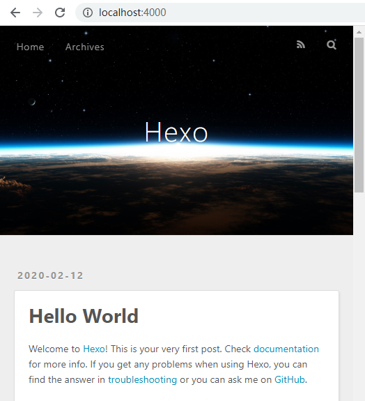

本文将介绍如何使用GitHub pages和hexo来搭建一个个人博客。github pages 是一个静态网页博客平台。建立好git仓库之后，可以直接在github上配置生成一个简单的首页index.html (没错还是hello world)，另外还支持域名配置。hexo是一个基于nodeJS实现的博客框架。它的最大的作用就是能将 markdown文档自动转化成 html文档。再搭配一些主题（比如：next主题）,将显示的非常美观，而且next主题是一个开源的可以自由定制的主题。
关于hexo的安装及使用
先安装nodejs，官网下载安装即可。Linux 安装npm即可。
1 | sudo apt install npm |
输入 npm -v ，如果出现版本号，那说明安装成功了并且环境变量也配置好了，如果是未知命令那就要配置一下环境变量。
windows的安装
如果已经安装了git bash,可以在git bash中使用以下安装命令（网上有人反应过失败，用cmd能成功，但应该是个例），否则使用cmd（快捷键Win+R然后输入cmd）窗口也是一样。后面的就和命令行安装一摸一样了。
命令行安装
1 | #windows环境的话 |
这一步安装可能略慢，原因大家都懂，就不说了。输入hexo -v如果能看到版本信息就说明成功了,另附npm W3C教程。
接下来就可以用hexo来生成博客了。新建一个博客文件夹，如blog,
1 | cd blog |
成功后，我们可以看到提示 localhost:4000 可以访问，用浏览器打开，可以看到首页。

个人调试可以用以下命令去一键生成：hexo clean && hexo g && hexo s
意思是先清除现有博客，然后生成，发布。另外hexo的远程部署命令是hexo d.
hexo配合github建站
当我们需要远程部署的时候，需要先安装hexo-deployer-git。npm install hexo-deployer-git --save
安装好之后在博客目录配置文件_config.yml最后面添加deploy字段如下：
1 | deploy: |
如果git仓库是ssh则需要生成rsa key,添加公钥到github，后续用远程更新代码即可不用输入用户名密码验证。这是git的操作，本文部再赘述。
此外，如果您的
Github Pages需要使用CNAME文件自定义域名，请将CNAME文件置于source目录下，只有这样hexo deploy才能将CNAME文件一并推送至部署分支。
关于hexo的工程文件说明如下：
_config.yml ——工程配置文件
source/ ——该目录为我们存放markdown文件的地方
theme/ ———存放主题的目录
public/ ——发布生成的路径，hexo clean可以删除该目录
hexo 创建文章、标签、分类
创建文章
hexo new "文章名称"--- title: CentOS7下Tomcat启动慢的原因及解决方案 date: 2017-12-02 21:01:24 comments: true #是否可评论 toc: true #是否显示文章目录 categories: "云服务器" #分类 tags: #标签 - centOS - tomcat ---创建标签
hexo new page tagstitle: tags date: 2017-12-02 21:01:24 type: "tags"创建分类
hexo new page categoriestitle: categories date: 2017-12-02 21:01:24 type: "categories"更多hexo详细说明如
API，主题，插件等请参阅hexo中文官方文档。
注意标签和分类中，title可以为空，但是type:一定要写对，否则网站不能自动关联。
next教程
在 Hexo 中有两份主要的配置文件，其名称都是 _config.yml。 其中，一份位于站点根目录下，主要包含 Hexo 本身的配置；称为 站点配置文件， 另一份位于主题目录下，称为 主题配置文件。
nexT是一个github 上的开源主题。nexT官网有教程教怎么使用、配置等。
下载主题
克隆最新版本
在终端窗口下，定位到 Hexo 站点目录下。使用 Git checkout 代码：
1
2$ cd your-hexo-site
$ git clone https://github.com/iissnan/hexo-theme-next themes/next下载稳定版本
1.前往 NexT 版本 发布页面。
2.选择你所需要的版本，下载 Download 区域下的 Source Code (zip) 到本地。例如，下载 v0.4.0 版本。
3.解压所下载的压缩包至站点的 themes 目录下， 并将 解压后的文件夹名称（hexo-theme-next-0.4.0）更改为 next。
启用主题
与所有 Hexo 主题启用的模式一样。 当 克隆/下载 完成后，打开 站点配置文件， 找到 theme 字段，并将其值更改为 next。
| 启用 NexT 主题 |
|---|
theme: |
到此，NexT 主题安装完成。下一步我们将验证主题是否正确启用。在切换主题之后、验证之前， 我们最好使用 hexo clean 来清除 Hexo 的缓存。
验证主题
首先启动 Hexo 本地站点，并开启调试模式（即加上 –debug），整个命令是 hexo s –debug。 在服务启动的过程，注意观察命令行输出是否有任何异常信息，如果你碰到问题，这些信息将帮助他人更好的定位错误。 当命令行输出中提示出：INFO Hexo is running at http://0.0.0.0:4000/. Press Ctrl+C to stop.
此时即可使用浏览器访问 http://localhost:4000 ，检查站点是否正确运行。
现在，你已经成功安装并启用了 NexT 主题。下一步我们将要更改一些主题的设定，包括个性化以及集成第三方服务。
主题设定
选择 Scheme
Scheme 是 NexT 提供的一种特性，借助于 Scheme，NexT 为你提供多种不同的外观。同时，几乎所有的配置都可以 在 Scheme 之间共用。目前 NexT 支持三种 Scheme，他们是：
Muse - 默认 Scheme，这是 NexT 最初的版本，黑白主调，大量留白
Mist - Muse 的紧凑版本，整洁有序的单栏外观
Pisces - 双栏 Scheme，小家碧玉似的清新
Scheme 的切换通过更改 主题配置文件，搜索 scheme 关键字。 你会看到有三行 scheme 的配置，将你需用启用的 scheme 前面注释 # 去除即可。
| 选择 Pisces Scheme |
|---|
| #scheme: Muse |
| #scheme: Mist |
| scheme: Pisces |
设置 界面语言
编辑 站点配置文件， 将 language 设置成你所需要的语言。建议明确设置你所需要的语言，例如选用简体中文，配置如下：
` language: zh-Hans
目前 NexT 支持的语言如以下表格所示：
| 语言 | 代码 | 设定示例 |
|---|---|---|
| English | en | language: en |
| 简体中文 | zh-Hans | language: zh-Hans |
| Français | fr-FR | language: fr-FR |
| Português | pt | language: pt or language: pt-BR |
| 繁體中文 | zh-hk 或者 zh-tw | language: zh-hk |
| Русский язык | ru | language: ru |
| Deutsch | de | language: de |
| 日本語 | ja | language: ja |
| Indonesian | id | language: id |
| Korean | ko | language: ko |
设置 菜单
菜单配置包括三个部分，第一是菜单项（名称和链接），第二是菜单项的显示文本，第三是菜单项对应的图标。 NexT 使用的是 Font Awesome 提供的图标， Font Awesome 提供了 600+ 的图标，可以满足绝大的多数的场景，同时无须担心在 Retina 屏幕下 图标模糊的问题。
编辑 主题配置文件，修改以下内容：
- 设定菜单内容，对应的字段是 menu。 菜单内容的设置格式是：
item name: link。其中item name是一个名称，这个名称并不直接显示在页面上，她将用于匹配图标以及翻译。
菜单示例配置
menu:
home: /
archives: /archives
#about: /about
#categories: /categories
tags: /tags
#commonweal: /404.html
若你的站点运行在子目录中，请将链接前缀的
/去掉
NexT 默认的菜单项有（标注 的项表示需要手动创建这个页面）：
| 键值 | 设定值 | 显示文本（简体中文） |
|---|---|---|
| home | home: / | 主页 |
| archives | archives: /archives | 归档页 |
| categories | categories: /categories | 分类页 |
| tags | tags: /tags | 标签页 |
| about | about: /about | 关于页面 |
| commonweal | commonweal: /404.html | 公益 404 |
- 设置菜单项的显示文本。在第一步中设置的菜单的名称并不直接用于界面上的展示。Hexo 在生成的时候将使用 这个名称查找对应的语言翻译，并提取显示文本。这些翻译文本放置在 NexT 主题目录下的
languages/{language}.yml（{language} 为你所使用的语言）。
以简体中文为例，若你需要添加一个菜单项，比如 something。那么就需要修改简体中文对应的翻译文件 languages/zh-Hans.yml，在 menu 字段下添加一项：
menu:
home: 首页
archives: 归档
categories: 分类
tags: 标签
about: 关于
search: 搜索
commonweal: 公益404
something: 有料
设定菜单项的图标，对应的字段是
menu_icons。 此设定格式是item name: icon name，其中item name与上一步所配置的菜单名字对应，icon name是 Font Awesome 图标的 名字。而enable可用于控制是否显示图标，你可以设置成false来去掉图标。菜单图标配置示例
menu_icons:enable: true \# Icon Mapping. home: home about: user categories: th tags: tags archives: archive commonweal: heartbeat在菜单图标开启的情况下，如果菜单项与菜单未匹配（没有设置或者无效的 Font Awesome 图标名字） 的情况下，NexT 将会使用 :? 作为图标。
请注意键值（如
home）的大小写要严格匹配设置 侧栏
默认情况下，侧栏仅在文章页面（拥有目录列表）时才显示，并放置于右侧位置。 可以通过修改 主题配置文件 中的 sidebar 字段来控制侧栏的行为。侧栏的设置包括两个部分，其一是侧栏的位置， 其二是侧栏显示的时机。
设置侧栏的位置，修改 sidebar.position 的值，支持的选项有：
left - 靠左放置
right - 靠右放置
目前仅 Pisces Scheme 支持 position 配置。影响版本5.0.0及更低版本。
sidebar:
position: left
- 设置侧栏显示的时机，修改
sidebar.display的值，支持的选项有： - post - 默认行为，在文章页面（拥有目录列表）时显示
- always - 在所有页面中都显示
- hide - 在所有页面中都隐藏（可以手动展开）
- remove - 完全移除
sidebar:
display: post
- 已知侧栏在 use motion: false 的情况下不会展示。 影响版本5.0.0及更低版本。
设置 头像
编辑 主题配置文件， 修改字段 avatar， 值设置成头像的链接地址。其中，头像的链接地址可以是：
| 地址 | 值 |
|---|---|
| 完整的互联网 URI | http://example.com/avatar.png |
| 站点内的地址 | 将头像放置主题目录下的 source/uploads/ （新建 uploads 目录若不存在） |
| 配置为：avatar: /uploads/avatar.png | |
| 或者 放置在 source/images/ 目录下 | |
| 配置为：avatar: /images/avatar.png |
头像设置示例
avatar: http://example.com/avatar.png
设置 作者昵称
编辑 站点配置文件， 设置 author 为你的昵称。
设置 站点描述
编辑 站点配置文件， 设置 description 字段为你的站点描述。站点描述可以是你喜欢的一句签名:)
主题配置
请参考连接主题配置
注意，踩坑记录：
正文中表示超链接时，前后应该用空格流出或者用特殊标签标记如:`http:localhost:4000`。原因：md语法问题导致的编译工程报错!
正文中输入#等特殊字符应该使用转义，否则也会因为解析失败，不能编译成功。
关于定制样式。chrome调配置样式，使用F12进入调试模式，找到相应的css或者js再去IDE（如：
vs code）中打开的工程中搜索并修改即可。表格不显示，前面一定要空一行，且表头不能省略
|。404公益是直接将
/404/改成/404.html.主题(next)里面访问的资源路径总是根目录，即使站点设置了child目录为根目录也不行（设置upload目录也不会被生成，即使站点打开了asset，目录乱绝对是一个bug。待修复）。
似乎现在已经修复了这个bug（待验证）。总之官方的使用方式很麻烦且阅读性烂，推荐（新版本已经不再需要）。修改hexo-asset-image插件，使用方法就是通过hexo new [layout] <title>命令创建新文章时自动创建一个同名文件夹_config.yml下的post_asset_folder: true将其改成true.用的时候只要即可，插件会自动修改具体的路径。完整的目录结构如下:TEST
├── a.jpg
├── b.jpg
└── c.jpg
TEST.md关于插件，推荐
1.使用RSS:npm install --save hexo-generator-feed
2.博客管理:npm install --save hexo-admin
3.Asset管理:没试npm install --save hexo-asset,也许是新版修复了bug的问题，在新版中使用这个会导致有图片的文章重复解析一遍，害我找了半天，但我更相信这还是一个bug，（不推荐）hexo-asset-image这个插件。
4.文章字数统计:npm i --save hexo-wordcount